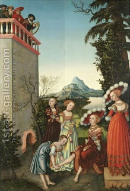

Shabbat 56 - Wrong conclusions
Rav Shmuel bar Nachmani said in the name of Rabbi Yonatan, "Whoever thinks that Reuven sinned with Bilhah, his father's concubine , is simply mistaken. Rather, he defended his own mother, by moving Jacob's bed out of Bilhah's tent to that of his mother." What is the proof? - In the next Torah phrase, "And the sons of Jacob were twelve" - all equal in statue. However, there is also an opinion that he was greatly tempted but stopped himself, and even another opinion, that he did cohabit with her.
He also stated, "Whoever says that the sons of Eli, the High Priest, sinned with women who brought their sacrifices , is simply mistaken. Rather, they delayed these sacrifices and thus prevented the women from returning to their husbands." The proof? - Since they are listed in the honorable line of the priests, they were also righteous; however, their actions were as bad as if they had lain with the women.
He also stated, "Whoever says that the sons of Shmuel (who ' went after monetary gain ') sinned, is simply mistaken. They only 'did not go in the ways of their father,' who visited all places in Israel to resolve disputes. Instead, they lived in their place, attended their own affairs, and thus increased the wages of their scribes." However, there is an opinion of Rabbi Yehudah that they gave goods to merchants to sell and were then partial to these merchants, which is equivalent to taking bribes.
He also stated, "Whoever says that David sinned with Batsheva, is simply mistaken. He only wanted to do so, but did not." The proof? - " David was successful in his ways, and God was always with him ." In fact, the soldiers in David's army all gave conditional divorces to their wives, so that in the case of their death without witnesses she would have a permission to remarry. Thus after Uriah's death his divorce took place retroactively. This practice David had learned from his family . David only wanted to cohabit with her before she got the document. All the phrases in the story then take on a different meaning.
Art: Lucas The Elder Cranach - David And Bathsheba